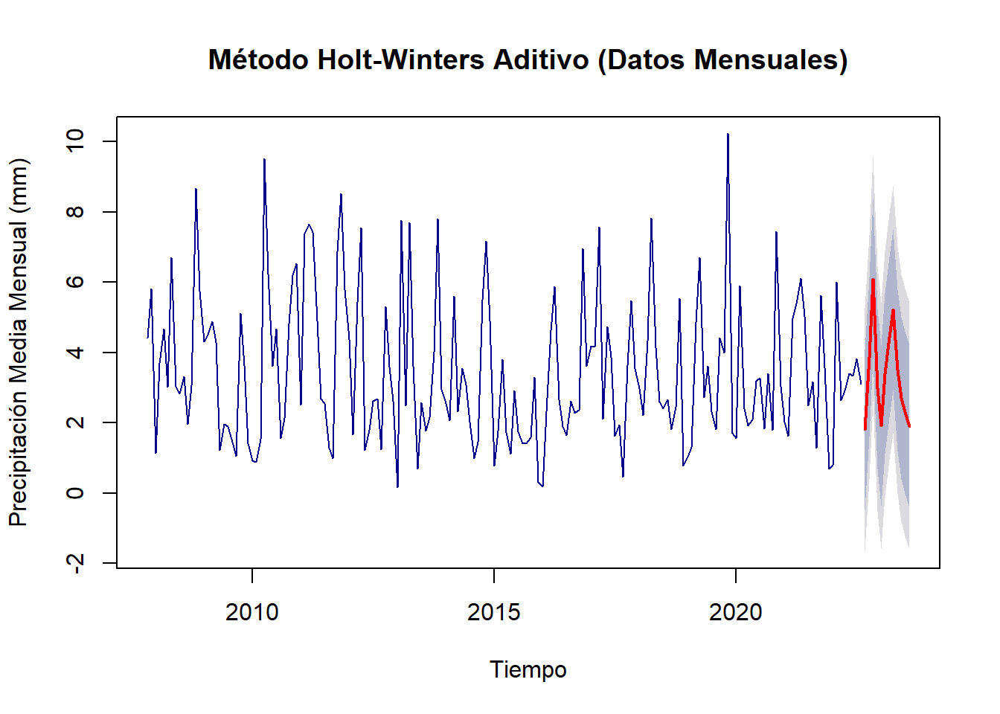

Sección 4 Métodos de Holt-Winters y Suavizamiento
Este análisis amplía el trabajo previo sobre la serie temporal de precipitación diaria al aplicar métodos de Holt-Winters y técnicas de suavización exponencial. El objetivo es modelar patrones de estacionalidad y tendencias, y generar pronósticos precisos sobre el comportamiento de la precipitación en distintos horizontes temporales.
4.1 Metodologia
Para trabajar con los datos de alta frecuencia, implementamos dos enfoques que permiten mejorar la precisión de los pronósticos:
Agregación mensual para el método de Holt-Winters: Agrupamos la serie diaria en datos mensuales para observar patrones estacionales y tendencias de largo plazo, aprovechando la estructura aditiva y multiplicativa de Holt-Winters para modelar la variabilidad.
Suavización de la serie diaria mediante métodos de media móvil y suavización exponencial: Aplicamos técnicas de suavización sobre la serie original de datos diarios para reducir la variabilidad de corto plazo y captar tendencias significativas en el tiempo.
4.1.1 Implementación del método Holt-Winters para datos mensuales
Para aplicar el modelo de Holt-Winters, primero convertimos los datos diarios en una serie mensual, permitiendo captar patrones estacionales y de tendencia en intervalos de tiempo amplios. Posteriormente, utilizamos tanto el modelo aditivo como el multiplicativo, comparando su rendimiento para identificar cuál se adapta mejor a la estructura de la serie.
Code
Cada modelo se visualiza y se evalúa a través de métricas de precisión, comparando las estructuras aditiva y multiplicativa para ver cuál proporciona una mejor predicción de la precipitación mensual.
Code

Code
Code
# Comparar métricas de precisión
hw_aditivo_accuracy <- accuracy(hw_aditivo)
hw_multiplicativo_accuracy <- accuracy(hw_multiplicativo)
# Crear tabla comparativa
comparacion <- rbind(
data.frame(Modelo = "Holt-Winters Aditivo", hw_aditivo_accuracy),
data.frame(Modelo = "Holt-Winters Multiplicativo", hw_multiplicativo_accuracy)
)
kable(comparacion, caption = "Comparación de Métricas de Precisión (Datos Mensuales)")| Modelo | ME | RMSE | MAE | MPE | MAPE | MASE | ACF1 | |
|---|---|---|---|---|---|---|---|---|
| Training set | Holt-Winters Aditivo | -0.0120102 | 1.685599 | 1.340457 | -42.44121 | 67.77488 | 0.6617076 | 0.0805037 |
| Training set1 | Holt-Winters Multiplicativo | -0.0888112 | 1.696740 | 1.355115 | -49.68245 | 72.73597 | 0.6689436 | 0.0881461 |
4.1.2 Métodos de Suavización para Datos Diarios
Para la serie de datos diarios, aplicamos técnicas de suavización mediante medias móviles y suavización exponencial simple para reducir el “ruido” inherente a la frecuencia diaria y resaltar las tendencias subyacentes:
Media móvil: Calculamos la media móvil para 7 y 30 días, lo cual permite analizar patrones de corto y mediano plazo en la serie, generando una visión menos volátil de la precipitación diaria.
Suavización exponencial simple: Aplicamos suavización exponencial simple con un horizonte de pronóstico de 30 días, un método que otorga más peso a los datos recientes, capturando tendencias recientes sin eliminar los valores extremos de los datos.
Code
# Suavización con media móvil
ma_7 <- ma(ts_lluvia, order = 7) # Media móvil de 7 días
ma_30 <- ma(ts_lluvia, order = 30) # Media móvil de 30 días
# Suavización exponencial simple
ses_model <- ses(ts_lluvia, h = 30) # Pronóstico para 30 días
# Visualización comparativa
par(mfrow = c(3,1), mar = c(4,4,2,2))
# Gráfico 1: Serie original con MA-7
plot(ts_lluvia, main = "Serie Original con Media Móvil de 7 días",
ylab = "Precipitación (mm)", col = "gray70", type = "l")
lines(ma_7, col = "blue", lwd = 2)
legend("topright", legend = c("Original", "MA-7"),
col = c("gray70", "blue"), lty = 1)
# Gráfico 2: Serie original con MA-30
plot(ts_lluvia, main = "Serie Original con Media Móvil de 30 días",
ylab = "Precipitación (mm)", col = "gray70", type = "l")
lines(ma_30, col = "red", lwd = 2)
legend("topright", legend = c("Original", "MA-30"),
col = c("gray70", "red"), lty = 1)
# Gráfico 3: Suavización exponencial simple
plot(ses_model, main = "Suavización Exponencial Simple",
ylab = "Precipitación (mm)", fcol = "green")
Cada una de estas técnicas se visualiza para comparar la serie original y suavizada, ayudando a observar las diferencias y evaluar qué técnica proporciona mayor claridad en la tendencia de la precipitación diaria.
4.1.3 Análisis de Componentes (Datos Mensuales)
Finalmente, el método de Holt-Winters permite extraer y analizar los componentes principales de la serie: nivel, tendencia y estacionalidad. Esto permite entender cómo cada componente contribuye a la variabilidad en la precipitación mensual, lo cual es clave para interpretar y ajustar los pronósticos. Presentamos los parámetros del modelo (Alpha, Beta, Gamma) y su influencia en los componentes.
Code

Cada componente proporciona información sobre patrones clave de la serie temporal, y el análisis de los parámetros estimados ayuda a comprender el grado de ajuste del modelo a estos patrones
Code
# Análisis de los parámetros estimados
parametros <- data.frame(
Parámetro = c("Alpha (Nivel)", "Beta (Tendencia)", "Gamma (Estacional)"),
Valor = round(c(hw_aditivo$model$par[1],
hw_aditivo$model$par[2],
hw_aditivo$model$par[3]), 4)
)
kable(parametros, caption = "Parámetros Estimados del Modelo Holt-Winters")| Parámetro | Valor | |
|---|---|---|
| alpha | Alpha (Nivel) | 0.0587 |
| beta | Beta (Tendencia) | 0.0001 |
| gamma | Gamma (Estacional) | 0.0001 |
4.2 Análisis de Resultados
4.2.1 Análisis del Modelo Holt-Winters
Los resultados del método Holt-Winters, tanto en su versión aditiva como multiplicativa, revelan varios aspectos importantes sobre el comportamiento de la precipitación:
Comparación de Modelos:
El modelo aditivo muestra un mejor desempeño general, con un RMSE de 1.686 mm comparado con 1.697 mm del modelo multiplicativo.
El Error Medio (ME) es menor en el modelo aditivo (-0.012 mm vs -0.089 mm), indicando un sesgo ligeramente menor en las predicciones.
Ambos modelos muestran valores bajos de ACF1 (0.081 y 0.088 respectivamente), sugiriendo que los residuos están adecuadamente descorrelacionados.
Parámetros del Modelo:
El valor Alpha (0.0587) indica una adaptación lenta a cambios en el nivel de la serie.
Los valores muy bajos de Beta y Gamma (0.0001) sugieren que tanto la tendencia como la estacionalidad son bastante estables y cambian muy gradualmente.
Esta combinación de parámetros produce un modelo conservador que prioriza la estabilidad sobre la adaptación rápida a cambios.
4.2.2 Análisis de la Descomposición Temporal
La descomposición de la serie temporal revela:
Componentes:
La serie observada muestra una clara variabilidad cíclica con amplitudes variables.
El componente de tendencia indica una ligera disminución durante el período 2015-2017, seguida de una estabilización.
El patrón estacional es consistente y bien definido, con una amplitud relativamente constante.
El componente aleatorio muestra variabilidad moderada sin patrones evidentes.
4.2.3 Análisis de las Técnicas de Suavización
Las diferentes técnicas de suavización muestran:
Medias Móviles:
La media móvil de 7 días (línea azul) mantiene más detalle de la variabilidad a corto plazo.
La media móvil de 30 días (línea roja) proporciona una visión más suavizada, revelando tendencias de mediano plazo.
Suavización Exponencial:
- El método de suavización exponencial simple muestra efectividad en la reducción del ruido mientras mantiene la capacidad de respuesta a cambios en la serie.
4.2.4 Pronósticos y Tendencias
Los pronósticos generados, en las dos primeras imagenes, indican:
Una tendencia estable para los próximos períodos con intervalos de confianza que se amplían gradualmente.
La banda de predicción (área sombreada) muestra un ensanchamiento progresivo, indicando mayor incertidumbre en predicciones más lejanas.
El modelo captura adecuadamente la estacionalidad histórica y la proyecta en sus predicciones.
4.2.5 Limitaciones y Consideraciones
Los altos valores de MAPE (67.77% para el modelo aditivo y 72.74% para el multiplicativo) sugieren que las predicciones puntuales deben interpretarse con cautela.
La naturaleza variable de la precipitación diaria hace que los pronósticos sean más confiables en escalas temporales más amplias (mensuales) que en predicciones diarias.
Este análisis proporciona una base sólida para la comprensión del comportamiento temporal de la precipitación y su posible evolución futura, aunque se recomienda considerar los intervalos de confianza en la toma de decisiones basadas en estos pronósticos.